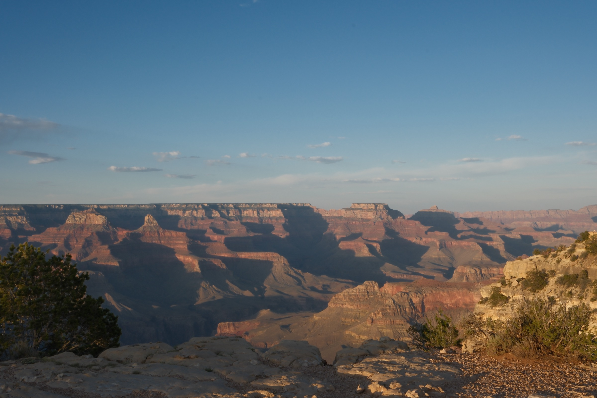
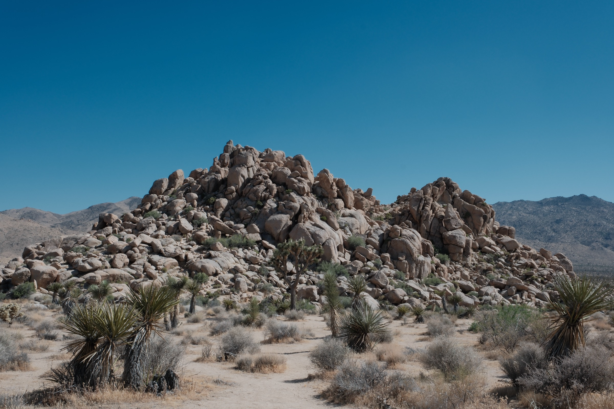
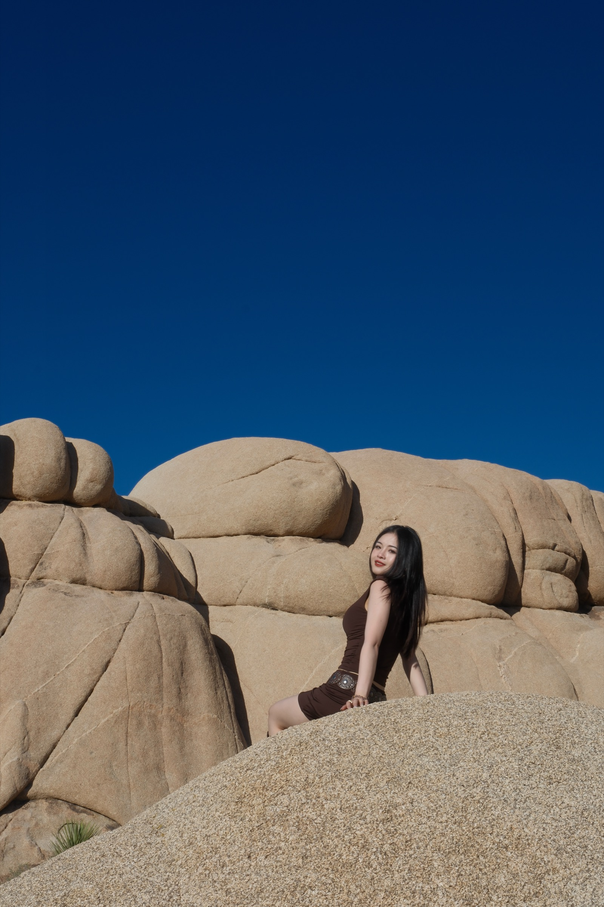
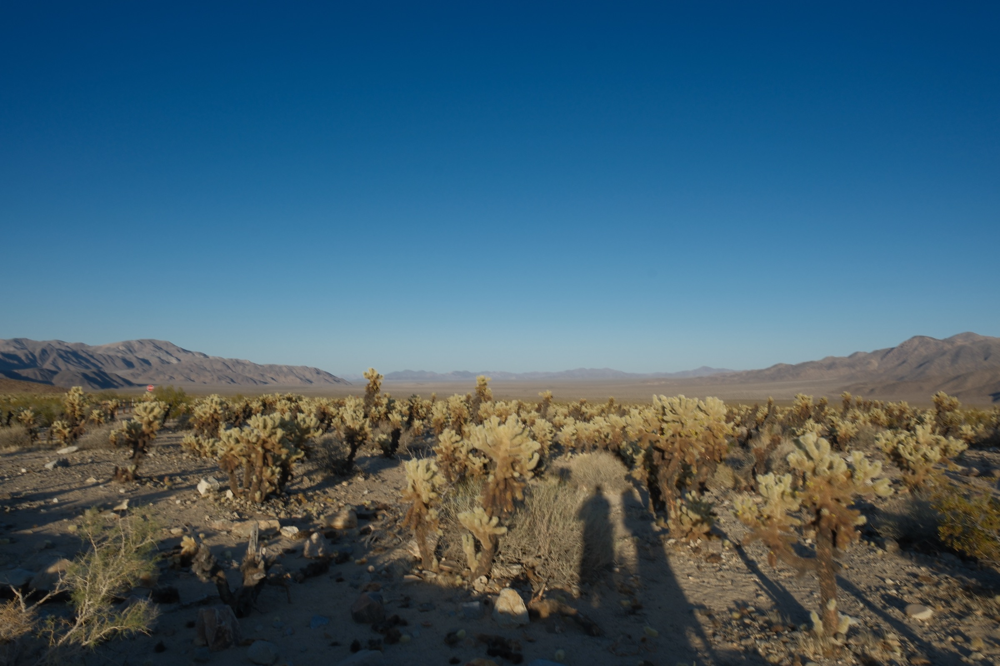
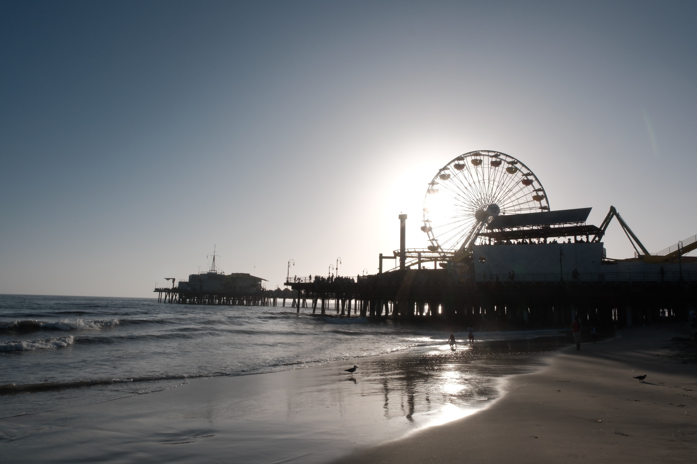

Wild West
This trip mattered more than most. It was my graduation trip with my parents, an actual turning point. Most of it was spent behind the wheel, hours of open road between stops, and that driving alone gave the whole thing a specific feeling: half exploration, half frontier, always headed toward something not quite there yet.
Looking at these next to the Xinjiang photos, taken a few years earlier, I can tell I've actually gotten better at this: tighter compositions, more patience for waiting on light. That tracks with basically everything I've made here. I don't think I finish learning a medium so much as get moderately better at it and move on to the next one.
There's something fitting about that lesson landing on this specific trip. The frontier isn't really about the West as a place, it's a state of always being slightly ahead of wherever you're currently standing. That's roughly how both my art and my work have felt lately, less about arriving somewhere finished, more about continuing to chase a moving edge.

The Great Canyon
Joshua Tree
Getting closer, again
Cactus Garden
Santa Monica